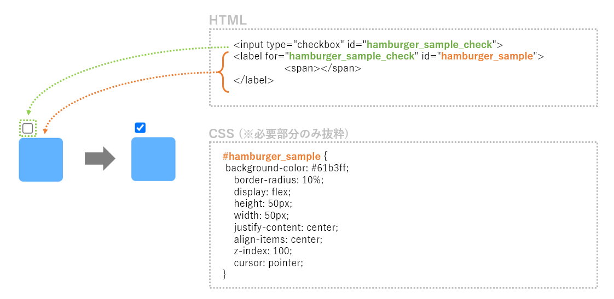
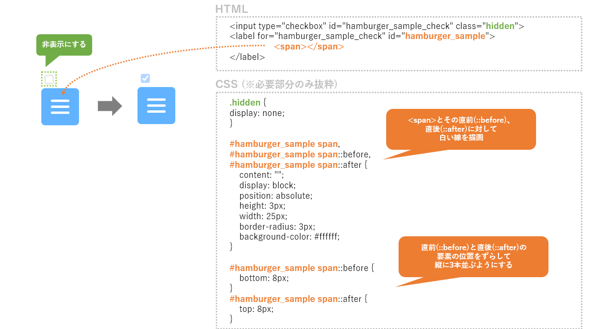
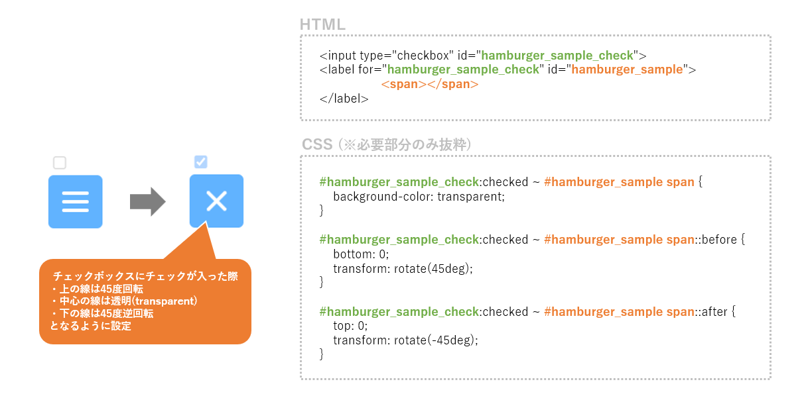
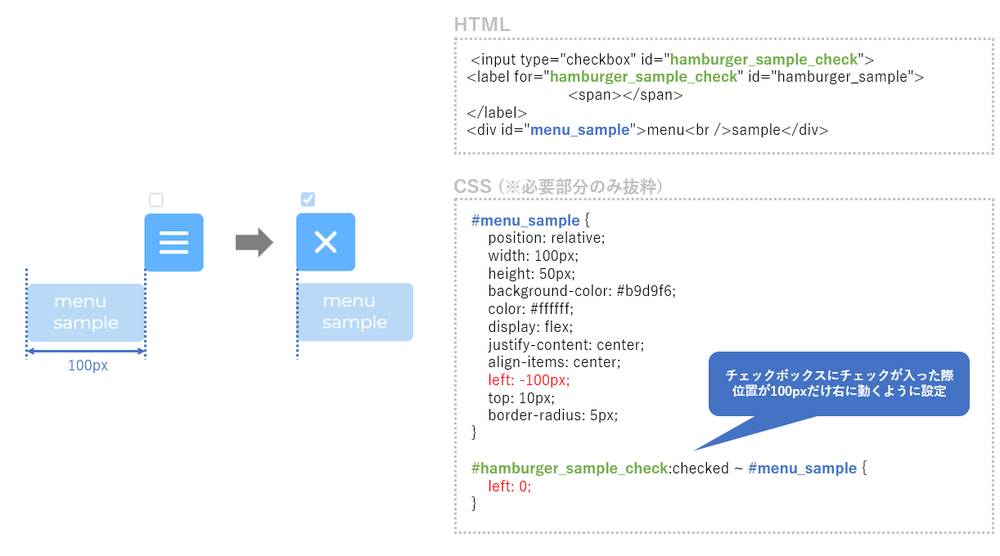
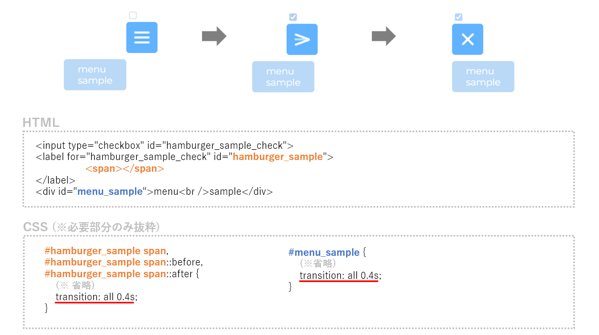

ハンバーガーメニューのアニメーション
コードサンプル
<div id="hamburger_sample_button">
<input type="checkbox" id="hamburger_sample_check" class="hidden">
<label for="hamburger_sample_check" id="hamburger_sample">
<span></span>
</label>
<div id="menu_sample">menu<br />sample</div>
</div>
.hidden {
display: none;
}
#hamburger_sample {
background-color: #61b3ff;
border-radius: 10%;
display: flex;
height: 50px;
width: 50px;
justify-content: center;
align-items: center;
z-index: 100;
cursor: pointer;
}
#hamburger_sample span,
#hamburger_sample span::before,
#hamburger_sample span::after {
content: "";
display: block;
position: absolute;
height: 3px;
width: 25px;
border-radius: 3px;
background-color: #ffffff;
transition: all 0.4s;
}
#hamburger_sample span::before {
bottom: 8px;
}
#hamburger_sample span::after {
top: 8px;
}
#hamburger_sample_check:checked ~ #menu_sample {
left: 0;
}
#hamburger_sample_check:checked ~ #hamburger_sample span {
background-color: transparent;
}
#hamburger_sample_check:checked ~ #hamburger_sample span::before {
bottom: 0;
transform: rotate(45deg);
}
#hamburger_sample_check:checked ~ #hamburger_sample span::after {
top: 0;
transform: rotate(-45deg);
}
#menu_sample {
position: relative;
width: 100px;
height: 50px;
background-color: #b9d9f6;
color: #ffffff;
display: flex;
justify-content: center;
align-items: center;
left: -100px;
top: 10px;
border-radius: 5px;
}
解説
ハンバーガーメニューは一見複雑そうな内容に見えますが、ひとつひとつはシンプルなつくりとなっています。
順に追って見ていきましょう。
① まず、チェックボックスとそれに連動するボタンを用意します。

チェックボックスを用意した後、そのチェックボックスに対応するラベルを作成します。
ラベルの見た目はCSSで調整しています。高さと幅は50px、背景は#61b3ff(■)…と設定し、疑似的なボタンにしています。
② 次に、チェックボックス部分を非表示にし、ラベル(疑似ボタン)に白い3本線を作成します。

チェックボックスは見た目上不要なため、非表示に設定します。
ラベルの内部の<span>タグに対しては、CSSで高さ3px、幅25pxの線を設定しました。
また、<span>タグの直前(::before)・直後(::after)にも疑似要素を作成し、それらに対しても同様の線を設定しました。
そのままだと3本線は重なった状態となってしまうため、直前・直後の疑似要素に対して上下方向にずらす設定を追加しています。
③ チェックボックスにチェックが入った際の変化を設定します。

チェックボックスにチェックが入った状態(:checked)に対してCSSで設定をしています。
②で作成した3本線に対し、上からそれぞれ45度回転・色を透明(transparent)・45度逆回転を設定しており、また綺麗な×マークに見えるように位置を調整しています。
④ 連動する追加要素(メニューバー)を設定します。

ハンバーガーメニューのクリックによって連動させたい要素を作成します。
今回は疑似的なメニューの図形を用意し、水平位置がチェック前とチェック後で100pxだけ変化するように設定しました。
⑤ 最後に、変化する要素の動きを滑らかにするトランジション(transition)を設定して完了です。

②で作成した3本線と④で作成した疑似メニューに対して、チェックを入れる前・入れた後を含むすべての状態変化が0.4秒かけて変化するように設定します。
これでハンバーガーメニューが完成です。お疲れ様でした！
なお、ここで記載した内容はあくまでも一例であり、仕組みを理解すれば色々な応用が可能です。
思い思いのハンバーガーメニューを作っていきましょう！